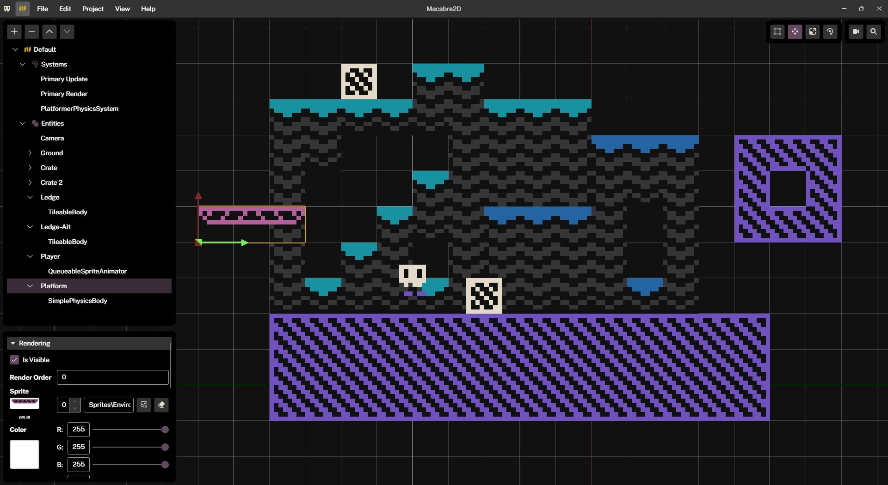
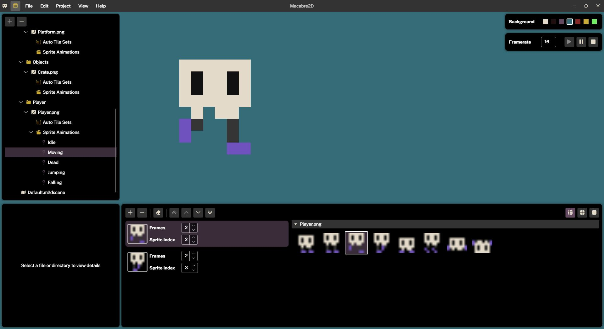
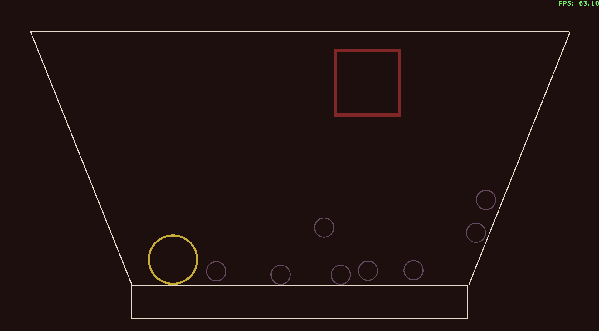

Macabresoft is focused on developing open source software, which can be found on GitHub.
I tend to work on game development, audio processing, and time saving utilities.
A 2D game engine built on top of MonoGame. Custom features include physics, tile maps, sprite animations, audio playback, and a rubust scene/project editor.
The engine and editor are both multiplatform. UI created using AvaloniaUI, a cross platform XAML framework.
  A guitar tuner built for the web. It can detect notes for standard tuning and drop D. It is also available as a progressive web app.
A piano chord catalog that uses integer notation and math to display finger positions for various chords..
This was a project to learn a little bit of angular, so it's small in scope, but it has been helpful as someone learning the basics of piano.
A theme and control library for AvaloniaUI. Used by Macabre2D and the Guitar Tuner.
.NET Core libraries used across Macabresoft products.